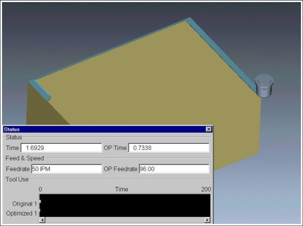
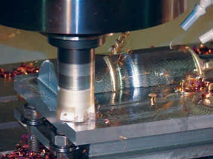

|
OptiPath - Takým yolu optimizasyon modülü
Optipath post-proses edilmiþ G kodlarýný veya doðrudan CAM yazýlýmýnýn çýktýsýný analiz ederek takým hareketlerini daha küçük aralýklara böler. Bu aralýklarýn boyutlarý yazýlýmda kullanýcý tarafýndan belirlenir. Yazýlým, her aralýkta kaldýrýlan talaþ miktarýna göre en uygun ilerleme deðerlerini belirler ve yeni bir NC kodu çýkartýr. Takým hareketlerine bir müdahalede bulunmazken çok daha efektif ilerleme deðerleri kullanýr. Daha efektif ilerleme deðerleri sayesinde, bir yandan daha kaliteli parça yüzeyleri elde edilirken bir yandan da "sabit talaþ yükü" esasýna dayanarak takým ömrü artar ve tezgah tamamen vuruntusuz olarak çalýþýr.
Günümüzde optimizasyon yazýlýmlarý zaman zaman yeni tezgah yatýrýmlarýna alternatif olmaya bile baþlamýþtýr. Zira Optipath sayesinde firmalar rahatlýkla kapasite artýþý saðlayabiliyorlar.
Bir Amerikan firmasý olan Ingersoll Kesici Takýmlar, NC kodlarýnýn optimizasyon ve simülasyonunu 3 senedir VERICUT ile yapýyor. Þu anda firmada hiçbir NC kodu VERICUT'tan geçmeden tezgaha gönderilmiyor. Mühendis Paul Gerardy'nin dediklerine bir göz atalým; "OptiPath'i ilk kullanmaya baþladýðýmýzda operatörlerimiz bu olaya son derece soðuk ve kuþkucu baktýlar. Ancak operatörlerin, CAM programcýlarýmýzý optimizasyon yapmayý unutmamalarý konusunda sýk sýk uyarmaya baþlamalarý çok uzun sürmedi. Genellikle, optimizasyon iþlemi programcýlar için fazladan bir iþ gibi görünse de, aslýnda programlamayý çok daha kolay hale getiriyor. Optipath'i kullandýðýmýz ilk sene içerisinde NC kodu çýkartma sürelerimiz rekor seviyelerde azalarak firmaya yýlda 250.000 ila 500.000 dolar deðerinde tasarruf saðlamaya baþladý!"

Bir çok operatör, iþleme esnasýnda ilerleme deðerlerini arttýrýp azaltmaktadýr. Tecrübeli operatörler, makinanýn sesinden bile ilerlemenin artmasý veya azalmasý gerektiðini anlayabilirler. Ancak bu müdahale operatörün tecrübe ve bilgisi ile sýnýrlý kalmakta olup programcý tarafýndan yapýlamamaktadýr. Dolayýsýyla bu bilgi birikimi operatörün firmadan ayrýlmasý durumunda onunla birlikte firmayý terk etmektedir. Optipath, hem programcýnýn hem de operatörün tecrübelerinden öðrenebilmekte ve bu bilgi birikimini saklayabilmektedir. Söz konusu "öðrenme modunda" iken, yazýlým bir parçanýn iþlemesinde kullanýlan deðerleri kütüphanesine alarak benzer malzemeler ve takýmlar ile yapýlan daha sonraki iþlemelere ayný deðerleri uygulayabilmektedir. Programcý veya tezgah operatörü isterlerse iþi tamamen yazýlýma býrakmakta isterlerse sadece kendi tecrübelerini kullanabilmektedirler. Genellikle tercih edilen yöntem ise her ikisini bir arada kullanmak yani hem kiþisel tecrübelerden hem de yazýlýmýn yeteneklerinden istifade etmektir.

H13 çelikten optimize edilmiþ NC kodu ile yapýlan iþleme -
Ingersoll Cutting Tool firmasý OptiPath optimizasyon yazýlýmý ile
yýlda 250,000 ila 500,000 dolar kazanç saðlýyor.
Auto-DIFF Modülü - Ölçü ve Hassasiyet Kontrolü:
Auto-Diff modülü sayesinde, VERICUT'ýn içinde yapýlan simülasyonda kalan kütük malzeme ile CAD modeli arasýnda karþýlaþtýrma yapýlabilir.
Yapýlan bu karþýlaþtýrmada (+) ve (-) toleranslar verilerek kesilmeden kalan ya da fazladan kesilen(muhtemel dalma) yerler kullanýcý tarafýndan belirlenen renklerde gösterilir.
Model-Export Modülü - Takým yolundan CAD modele dönüþ!
Bu modül sayesinde yapýlan simülasyon sonucunda kalan kütük geometri VERICUT tarafýndan CAD dataya çevrilir. Çevrilen bu data IGS ya da STL formatýnda CAD yazýlýmlarýna aktarýlabilir. Bu sayede elinizde sadece G kodlarý bulunan modelleri CAD data haline getirebilirsiniz.
Özet olarak VERICUT Yazýlýmý'nýn faydalarý þu þekilde sýralanabilir:
. Tezgah verimliliðinin büyük ölçüde artýrýlmasý.
. Post-proses edilmiþ takým yolundan kaynaklanabilecek yüksek maliyetli hatalarýn önlenmesi.
. Daha iyi ve kaliteli NC programlama.
. CAM yazýlýmýndan çýkan yüksek yoðunluklu NC datasýnýn filtreleme(arc fitting veya NURBS) yoluyla eski tezgahlarda da rahat ve hýzlý çalýþabilmesi.
. Operatörün korkmadan risksiz ve güvenli çalýþabilmesi.
. Parça tasarýmý ile iþlenmiþ parçanýn kýyaslama ve doðruluk kontrollerinin yapýlabilmesi.
*** ÜCRETSÝZ TANITIM CD'si için bilgi@ucgenyazilim.com adresine isim, firma, telefon ve adres bilgileriniz ile beraber kullandýðýnýz tezgahýn ve CAD/CAM yazýlýmýnýn markalarýný gönderebilirsiniz.
Üçgen Yazýlým Danýþmanlýk Hakkýnda:
2005 yýlýnda kurulan Üçgen Yazýlým, imalat sanayine yönelik yazýlým, donaným ve hizmet çözümleri sunmaktadýr. Satýþýný yapmakta olduðu ürünler arasýnda Unigraphics NX CAD/CAM/CAE Yazýlýmý, VERICUT Simülasyon Yazýlýmý, NCspeed Takýmyolu Optimizasyonu, Solid Edge CAD/CAM Yazýlýmý ve DELL Ýþ Ýstasyonlarý bulunmaktadýr. Firma satýþ faaliyetlerine ek olarak, bireysel CAD/CAM eðitimleri, tersine mühendislik ve tasarým hizmetleri, optik tarama ve prototip konularýnda da imalat sektörüne yönelik hizmetler vermektedir.
Ýrtibat:
Sarp Eðilmez
Genel Müdür
Cem Alpay
Teknik Müdür
Üçgen Yazýlým Danýþmanlýk Bilgisayar ve Makine San. Tic. Ltd. Þti.
Poyraz Sok. Sadýkoðlu Ýþ Merkezi 2 Kat:1 Daire:14 Tuðlacýbaþý
Kadýköy Ýstanbul
Tel: (216) 550 52 06
Faks: (216) 550 52 07
www.ucgenyazilim.com
|